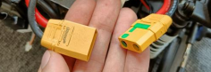
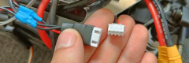
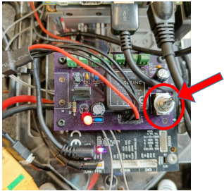

Working with the vehicles¶
Adding a new vehicle to the framework¶
To add a new vehicle to the framework, first setup an F1TENTH platform as described in the Hardware documentation. Then, retrieve the following properties of the vehicle: - IP address - Username - Password
With the above information, create a login config file in the configs folder. The file should be named car_ID_login.yaml. The structure of the file should follow the provided template titled Template_login.yaml. After the login config, create a new parameter file in the configs folder. The file should be named car_ID_params.yaml. The structure of the file should follow the provided template titled Template_params.yaml. Note that these parameters will be used as default, when the vehicle is launched. The parameters can be changed during runtime using the Python API.
If the configs are ready and the vehicle is connected to the network, the onboard stack can be installed with the following script:
from aimotion_f1tenth_utils.install import install_onboard_stack
install_onboard_stack('car_ID')
Note that the installation might take a couple of minutes.
Launching the vehicles¶
Connect the two plugs of the battery:
 Turn on the vehicle with the switch located on the power board:
The red LED will light up. The onboard computer of the vehicle should connect to the same network that the OptiTrack server and the control PC use. Help for the configuration is available here.
3. Connect to the vehicle via SSH and launch the onboard software stack:
The username, IP address, and password information can be found in the car_ID_login.yaml file in the configs folder.
After the SSH connection is established with the vehicle, run the following commands to launch the vehicle:
cd aimotion_f1tenth_system source startup_framework.sh
Utilization of control algorithms¶
This package provides a comprehensive environment for researching and testing control algorithms. It includes a default GP-LPV-LQR controller algorithm as part of the vehicle’s framework. #TODO(cite) The implementation of other external algorithms is also possible. In the following section this process will be presented.
The controller must adhere to the following requirements:
It must be placed within the aimotion_f1tenth_system/src/vehicle_control/vehicle_control directory (creating additional subpackages is highly recommended)
- It must implement the Controller interface:
class Controller(ABC): @abstractmethod def compute_control(self, state: np.ndarray, setpoint: dict, t:float) -> np.ndarray: pass @abstractmethod def set_trajectory(self, *args, **kwargs): pass @abstractmethod def reset(self): pass
- The compute control method should return 3 parameters:
Optimal inputs (numpy.array([d, delta]))
Errors (numpy.array([<lateral_error>, <heading_error>, <longitudinal_error>, <velocity>]))
Finished flag (True/False)
Adding a new controller to the manager
The ROS2 nodes running on the vehicle collect their parameters from a central parameter server called param_server. This node is responsible for providing all the pre-defined data for the vehicle.
To add new parameters to the existing parameter list:
Open the config file of the vehicle (<car_id.yaml>)
Create a new namespace within parameter_server.ros__parameters.controllers namespace
Add the new parameters
LPV_LQR: FREQUENCY: 60.0 LATERAL_CONTROL_GAINS: k1: - 0.00266 - -0.0168 - 0.0368 - 0.0357 k1_r: - -0.0008 - 0.0442 - -1.2247 k2: - 0.0424 - -0.268 - 0.588 - 0.57
Note that multiple namespaces can be nested within each other
Open the aimotion_f1tenth_system/src/vehicle_control/vehicle_control/control.py script
Declare the newly added parameters in the ROS2 node
self.declare_parameters( namespace= "", parameters=[ # lpv lq ("controllers.LPV_LQR.FREQUENCY", rclpy.Parameter.Type.DOUBLE), ('controllers.LPV_LQR.LATERAL_CONTROL_GAINS.k1',rclpy.Parameter.Type.DOUBLE_ARRAY), ('controllers.LPV_LQR.LATERAL_CONTROL_GAINS.k2',rclpy.Parameter.Type.DOUBLE_ARRAY), ('controllers.LPV_LQR.LATERAL_CONTROL_GAINS.k3',rclpy.Parameter.Type.DOUBLE_ARRAY), ('controllers.LPV_LQR.LATERAL_CONTROL_GAINS.k1_r',rclpy.Parameter.Type.DOUBLE_ARRAY), ('controllers.LPV_LQR.LATERAL_CONTROL_GAINS.k2_r',rclpy.Parameter.Type.DOUBLE_ARRAY), ('controllers.LPV_LQR.LONGITUDINAL_CONTROL_GAINS.k1' ,rclpy.Parameter.Type.DOUBLE_ARRAY), ('controllers.LPV_LQR.LONGITUDINAL_CONTROL_GAINS.k2' ,rclpy.Parameter.Type.DOUBLE_ARRAY) ])
Query the parameter into a python dictionary
LPV_LQR_params = { "frequency": loader.get_parameter("controllers.LPV_LQR.FREQUENCY").value, "lat_gains" : { 'k1': loader.get_parameter("controllers.LPV_LQR.LATERAL_CONTROL_GAINS.k1").value, 'k2': loader.get_parameter("controllers.LPV_LQR.LATERAL_CONTROL_GAINS.k2").value, 'k3': loader.get_parameter("controllers.LPV_LQR.LATERAL_CONTROL_GAINS.k3").value, 'k1_r': loader.get_parameter("controllers.LPV_LQR.LATERAL_CONTROL_GAINS.k1_r").value, 'k2_r': loader.get_parameter("controllers.LPV_LQR.LATERAL_CONTROL_GAINS.k2_r").value }, "long_gains" :{ 'k1': loader.get_parameter("controllers.LPV_LQR.LONGITUDINAL_CONTROL_GAINS.k1").value, 'k2': loader.get_parameter("controllers.LPV_LQR.LONGITUDINAL_CONTROL_GAINS.k2").value } }
Add controller to the available controllers
An instance of the controller must be constructed and added to the list of the available controllers in the TCP manager. The script file of the TCP manager can be found in:
aimotion_f1tenth_system/src/vehicle_control/vehicle_control/manager.py# check kwargs and initialize controllers if "GP_LPV_LQR_params" in kwargs: controller = init_GP_LPV_LQR(vehicle_params = kwargs["vehicle_params"], GP_LPV_LQR_params = kwargs["GP_LPV_LQR_params"]) self.controllers["GP_LPV_LQR"] = controller
After completing these steps and installing the new onboard software onto the vehicle, the controller can be activated via the Python API